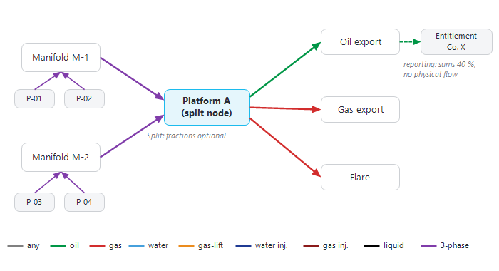
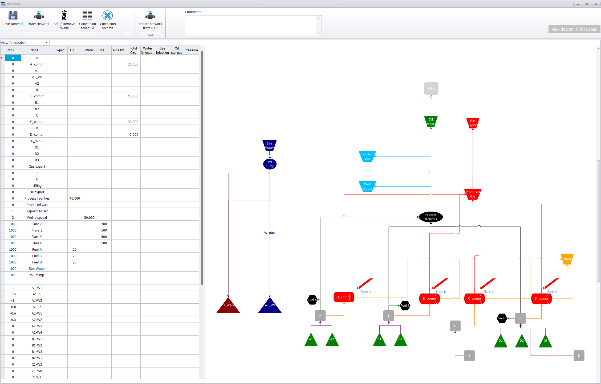

|
|
Network modelling
1. Overview — what the network is
The network describes how fluids travel from the wells to the facilities and to their final destination (export, flare, fuel, disposal, injection). Each scenario has its own network. It is made of:
•Nodes — manifolds, platforms, process facilities, compressors, pumps, tanks, export points, sources, flares, fuel, storage, reporting nodes. Each node has a unique name and a node type.
•Pipes — arrows from an upstream node to a downstream node. The colour of a pipe is the fluid it carries: black liquid, green oil, light blue water, red gas, purple 3-phase, orange gas-lift, navy water injection, dark red gas injection.
•Wells — each well flows to a node (producers) or is injected from a node (injectors). Wells are added and routed with "Add / Edit / Remove Wells" (see Add wells to Asset Model), or by re-drawing their links on the diagram (see Network editor).
•Constraints — maximum rates, uptime and pressures set on nodes and wells. At every forecast time step, Precept's solver keeps every flow within these constraints and decides which wells are choked back or shut in.

Figure 1 — The building blocks of a network: wells, manifolds, a split node, a platform with its export, and a reporting node fed by a dashed reporting line.
Network modelling, and the objective function used to solve and optimise production, must be done with care to get accurate results and fast run times. Do not hesitate to ask Cleverfield for help when you are not sure how to model your asset.
2. The Network window
Select the scenario, then click "Network" in the "Expertise" group of the main ribbon. The window opens maximised:
•On the left, a table chosen in the drop-down list above it (section 3). It opens on "View Initial Constraints".
•On the right, the network diagram. "View diagram in full screen" (top right) hides the table and gives the whole width to the diagram; click "Minimize diagram" to bring the table back.
•On the diagram itself (top right corner), the "Wells", "Reservoirs" and "Constraints" checkboxes draw the wells, the reservoirs and the constraint values on the network (see Network editor).

The Network window: the constraints table on the left, the network diagram on the right.
The ribbon of the Network window:
|
Button
|
What it does
|
|
Save Network
|
Saves the diagram and every table of the window (Ctrl+S does the same). See section 9.
|
|
Draw Network
|
Shows the diagram full screen with a palette of node icons and pipes to drag onto the network (see Network editor).
|
|
Add / Edit / Remove Wells
|
Opens the wells editor of the scenario. The Network window closes (save your changes first).
|
|
Rerouting
|
Opens the "Rerouting" schedule of the scenario.
|
|
Import Well Trajectories
|
Opens the data import window set to well trajectories.
|
|
Import GAP events
|
Shown only for a scenario in Material Balance or Simulation mode, or using the GAP processor. Reads events from a GAP model (needs GAP and OpenServer on the computer).
|
|
Network icons group
|
"Convert to new icons" / "Back to classic shapes". Shown only while the network still uses the classic shapes, or right after a conversion (see Network editor).
|
|
Help
|
Opens this manual.
|
If your account cannot edit this asset's data, the ribbon is disabled: you can look at the network but not change it.
3. The tables on the left
The drop-down list above the table chooses what is shown:
•"View Initial Constraints" — the constraints of every node and well at the start of the forecast (section 4).
•"View Splits" — the split fractions of the nodes that send a fluid to more than one node (section 5).
•"View Reporting Nodes" — the nodes and fractions summed by each reporting node (section 6).
•"View Coordinates" — the position of each node (section 7).
•"special modeling" — asset-specific modelling rules. Use it only as advised by Cleverfield.
•"Pipelines VLP" — the pipeline and pump lift curves used by the network pressure solve (section 8).
4. Initial constraints
"View Initial Constraints" lists the nodes first (sorted by Rank, then by name), then, after an empty row, the wells. Each column is a constraint; an empty cell means no constraint. Rates are in the asset's units (shown in the column headers). These values apply from the start of the forecast; to change a constraint at a later date, use Constraints changes vs time.
|
Column
|
Meaning
|
|
Rank
|
Display order only. In the timeline of the main window, nodes and wells are sorted by Rank (ascending), then alphabetically. A node with a Rank of 1000 or more is not shown in the timeline (useful for flares, fuel and other technical nodes).
|
|
Node
|
Read-only. To rename a node, change its name on the diagram, then save.
|
|
Type Node
|
Set from the icon when the node is drawn (e.g. Manifold, Platform, Plant, Process, Compressor, Pump, Choke, Cooler, Heater, Tank, Source, Storage, Flare, Fuel) and editable here. The types Well, Source, Tank, Fuel and Flare are protected and cannot be changed.
|
|
Liquid, Oil, Water, Gas, Gas-lift, Water Injection, Gas Injection
|
Maximum rate of that fluid through the node (or for the well).
|
|
Total Gas
|
Maximum produced gas plus gas-lift gas through the node (typically a compressor capacity).
|
|
Oil storage
|
Storage capacity. Shown only when the export option is switched on in the scenario Settings.
|
|
Uptime
|
Availability of the node or well, as a fraction (e.g. 0.95).
|
|
Min Pressure / Separator pressure / Min FBHP (OP)
|
On a node: its minimum (separator) pressure, which fixes the outlet pressure of the network pressure solve. On an oil producer: its minimum flowing bottom-hole pressure. Gauge, in the asset's pressure unit.
|
|
Max Pressure / Max Drawdown (OP) / Max IBHP (INJ)
|
On a node: its maximum pressure. On an oil producer: its maximum drawdown. On an injector: its maximum injection bottom-hole pressure.
|
The two pressure columns are shown only when the scenario's "Decline" setting is Material Balance or Simulation, or when the GAP processor is used.
Editing the table:
•Type a value in a cell; press Delete to clear the selected cells.
•Ctrl+C / Ctrl+V copy and paste values, one column at a time.
•Ctrl+S saves the network, as "Save Network" does.
5. Split nodes
A node can send the same fluid to more than one downstream node: draw one pipe of that fluid to each of them. "View Splits" lists only those nodes, with, for each fluid, the destination ("Oil Goes", "Water Goes", "Gas Goes", "Gas-lift Goes", "Water Injection Goes", "Gas Injection Goes") and its fraction ("Oil fraction", "Water fraction", and so on).
•Fraction left empty — the solver is free to share the fluid between the destinations, in the way that best serves the objective.
•Fraction entered (e.g. 0.3) — that share of the fluid arriving at the node is always sent to that destination.
6. Reporting nodes
Reporting nodes and reporting lines do not exist physically and never carry flow: they only add up fluids from other nodes, for reporting. Draw a reporting node with the Reporting icon and link it to the nodes it sums with dashed reporting lines (the "… reporting" lines of the palette).
"View Reporting Nodes" lists, for each reporting node, the node each fluid comes from ("Oil From", "Water From", "Gas From", "Gas-lift From", "Water Injection From", "Gas Injection From") and the fraction of that node's fluid to count ("Oil fraction", and so on). A typical use is entitled production: a field shared between several companies under a production sharing agreement, with one reporting node per company.
7. Coordinates
"View Coordinates" gives each node's X and Y (for this scenario) and its Z elevation (TVDSS, in the asset's length unit, shared by all the scenarios of the asset). A Z value is saved as soon as the cell is edited; X and Y are saved when edited and again with the network.
8. Pipelines VLP
"Pipelines VLP" lists the pipe legs and pumps that have a lift curve: "Upstream Node", "Downstream Node", "VLP Index" and a read-only "Type" (Pipeline or Pump). Rows are added when you generate a pipeline VLP or save a pump curve from the diagram. To remove a row, right-click it and choose "Remove selected VLP" (or press Delete) and confirm. These curves are used only by the network pressure solve of Material Balance and Simulation scenarios: see Pipelines, pumps and network pressure solve.
9. Saving the network
Click "Save Network" (or Ctrl+S). Precept saves the diagram, reads the nodes and pipes from it, then saves the constraints, splits, reporting nodes, coordinates, special modelling rules and pipeline VLPs, and any well re-routed on the diagram. A progress bar runs, then a confirmation message appears.
•Every node needs a unique name: two nodes with the same name stop the save with a warning.
•Every pipe must be attached at both ends: a loose pipe is reported ("A pipeline starting from … is not connected at the end of it.").
•If the save fails, Precept says: "Network cannot be saved. Make sure all your Nodes have a name and all the pipes are connected."
•Closing the window with unsaved changes asks for confirmation first.
How to draw and edit the network is described in Network editor. How to see the network during a forecast is described in Network view (forecast).
|
|